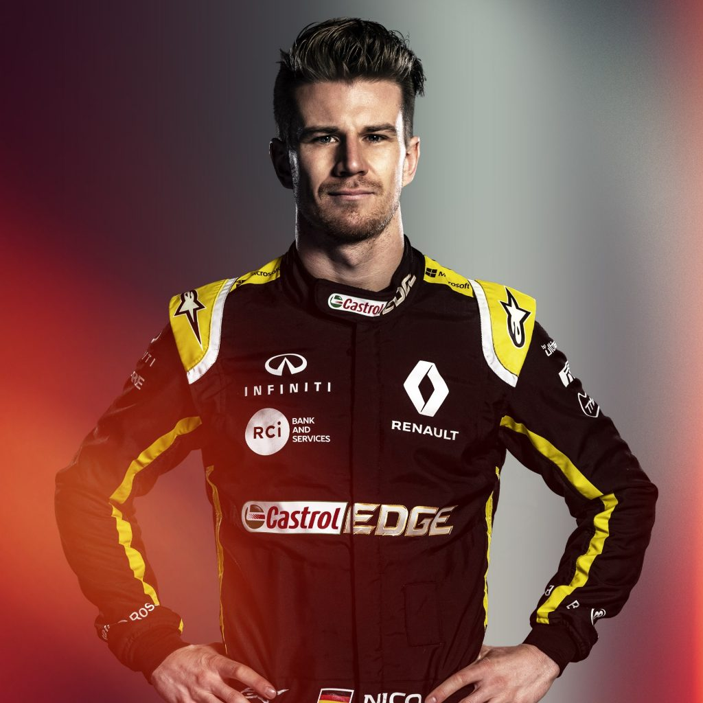

Рено
Действующие пилоты:
- Нико Хюлькенберг [27]
- Даниэль Риккардо [3]
|  |
Полное название: Renault F1 Team Местоположение: Энстоун , Великобритания Босс: Сирил Абитебул Технический директор: Ник Честер Шасси: R.S. 19 Блок питания: Renault Первое появление: 1986 Чемпионы мира: 2 Победы: 20 Поулы: 20 Быстрые круги: 13 |
 |
| Нико Хюлькенберг 27 | Даниэль Риккардо 3 |
Рено — команда «Формулы-1», образованная в 1977 году компанией Renault. В «Формуле-1» французский автопроизводитель был представлен и как конструктор, и как поставщик двигателей. В 1977 году команда дебютировала в чемпионате «Формулы-1» с болидом Renault RS01, он был оснащён первым турбированным двигателем в истории чемпионата. С 1983 года Рено начали поставлять свои двигатели другим командам. В те времена команда достигала побед в гонках, а некоторые их пилоты даже претендовали на чемпионство, однако, вопреки этому, после сезона 1985 года Рено покинули «Формулу-1», хотя и продолжили поставлять двигатели другим коллективам в 1986-м, а потом вновь с 1989 по 1997 сезоны, далее в разные годы, вплоть до настоящего времени.
Рено вернулась в «Формулу-1» в 2000 году, французы приобрели расположенную в английском Энстоуне команду Benetton. Проведя ребрендинг, они вновь начали участвовать в гонках с 2002 года под названием Renault F1 Team. Несмотря на изменение владельца и названия, табачная компания Mild Seven оставалась титульным спонсором команды вплоть до конца 2006 года. Команда достигла больших успехов в сезонах 2005 и 2006, оба раза завоевав Кубок Конструкторов и победы в личном зачёте. Полное название команды с 2007 года по 2009 — ING Renault F1 Team. В 2010 году команда называлась Renault F1 Team. В 2011 году команда получила название Lotus Renault GP. В конце 2011 года акционером команды стала компания Lotus Cars, произошло переименование в Lotus F1 Team, хотя до конца сезона было сохранено имя конструктора. С 2012 года Рено занималась только поставкой двигателей для команд чемпионата. После Гран-при Абу-Даби 2015 года было объявлено, что после выплаты долгов Lotus F1 Team команда будет куплена автоконцерном Renault и вновь станет заводским коллективом.
В качестве поставщика силовых агрегатов, Рено поспособствовала успеху целого ряда других команд. Французы поставляли двигатели коллективам Williams (1989—1997, 2012—2013), Benetton (1995—1997, 2001) и Red Bull (2007—2015), которые также достигали высших результатов в различные сезоны. За всю историю, с моторами Рено было одержано более 160 побед в гонках «Формулы-1».